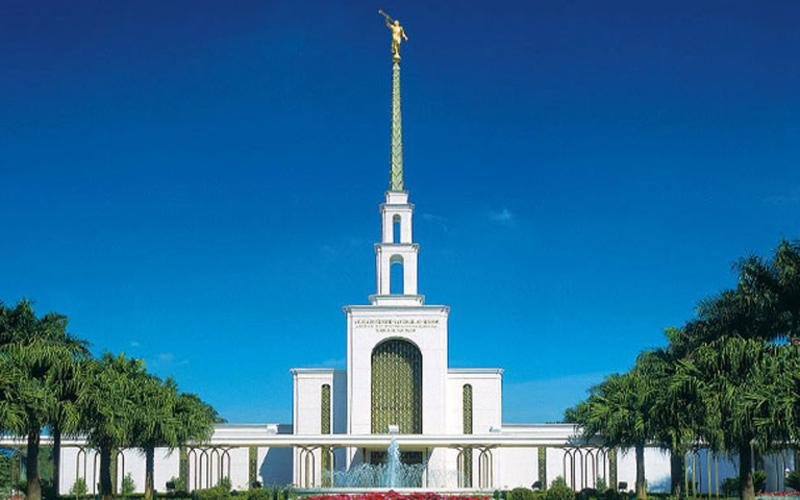
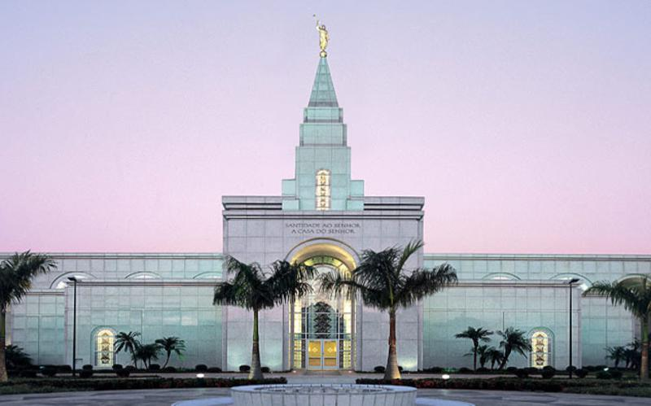
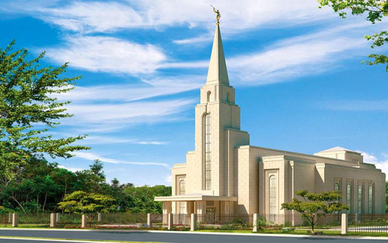
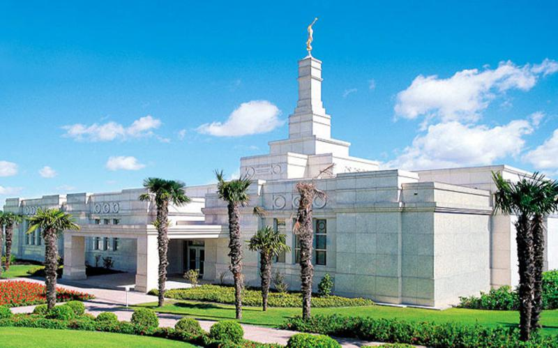
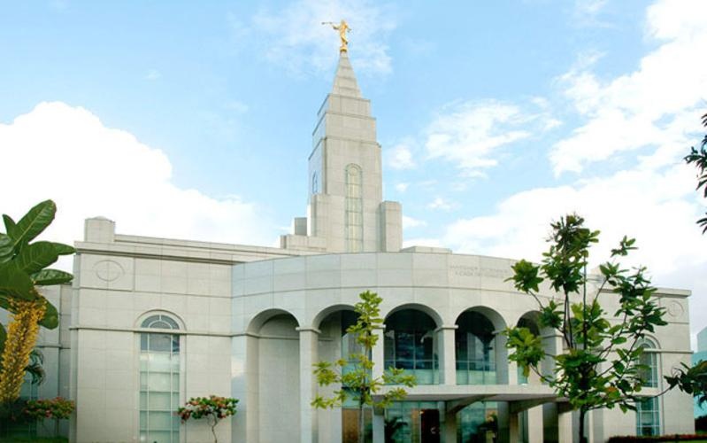

Página Inicial

Templo de São Paulo

Templo de Campinas

Templo de Curitiba
Templo de Fortaleza

Templo de Manaus
Templo de Natal

Templo de Porto Alegre

Templo do Recife
Templo de Salvador




